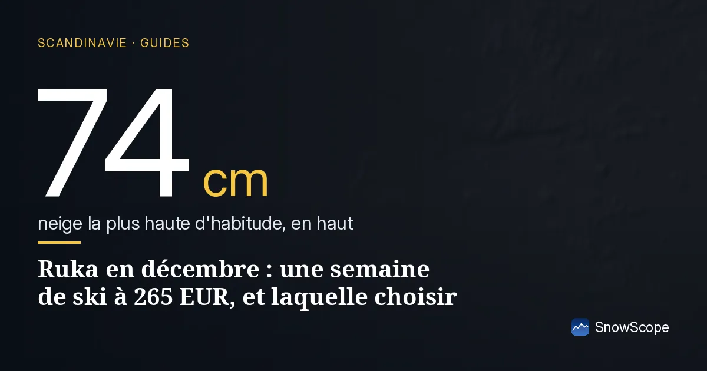
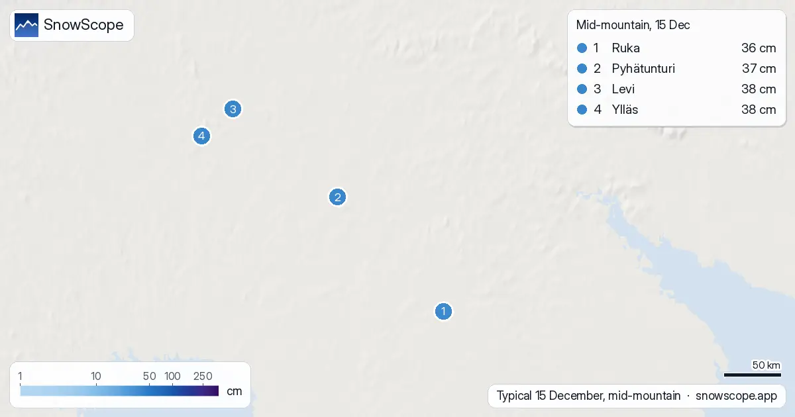

Ruka en décembre : une semaine de ski à 265 EUR, et laquelle choisir
Un forfait 6 jours adulte à Ruka coûte 265 EUR en saison 2026-27, l'un des tarifs fixes les plus bas pour une semaine en montagne. La neige est plus aléatoire : début décembre est peu fiable, mais à partir de la mi-décembre les probabilités s'inversent nettement en votre faveur, atteignant 85 % des hivers avec 30 cm ou plus lors de la semaine de Noël.
Consultez les prévisions neige en temps réel pour Ruka sur l'application SnowScopeHauteurs de neige, alertes poudreuse et carte 3D, gratuitement.
Quand partir pour les meilleures chances de neige
La neige de décembre à Ruka s'accumule au fil du mois. La première semaine (1er-7 décembre), seulement 39 % des hivers ont atteint 30 cm. À 8-14 décembre, ce chiffre monte à 61 %, et à la mi-décembre (15-21 décembre), vous êtes à 72 %. La semaine de Noël (22-28 décembre) est la plus sûre : 85 % des hivers avaient 30 cm ou plus à ce moment.
Le premier jour habituel pour trouver 30 cm au sol est le 5 décembre, mais cela varie d'année en année. Si début décembre est votre seule option, consultez la carte des neiges avant de réserver et préparez-vous à une couverture mince.


Épaisseur et quantité tout au long du mois
Un 15 décembre typique, Ruka cumule 36 cm sur tout le domaine skiable. Le 24 décembre, cela monte à 40 cm, et le 31 décembre, vous êtes à 46 cm. Ce sont les médianes de 46 hivers d'histoire. Une année faible (1 sur 10), attendez-vous à seulement 20 cm le 15 décembre ; une année abondante, 46 cm.
Ce que vous ne trouverez pas ici, c'est la profondeur de poudreuse. Seulement 4 % des semaines de Noël atteignent 60 cm ou plus. Ce que Ruka offre à la place, c'est une neige régulière, froide, damée, qui tient toute la saison. En 46 hivers, le sol n'a jamais été nu le 15 décembre.
L'altitude ne change presque rien
Ruka est une montagne basse et arrondie avec 24 remontées réparties sur 25 km de pistes entre 286 m et 494 m. Comme le terrain est lisse et peu élevé, notre historique des neiges le traite comme une seule zone. Le sommet n'a pas mesurément plus de neige que la base.
Cette uniformité est typique des fells de Laponie. Très au nord, même un hiver plus doux reste assez froid pour maintenir une base. Le vrai facteur de l'épaisseur de neige est la latitude et la période de l'année, pas l'altitude sur ces pentes douces.
Coût et timing pour une semaine au budget serré
Le prix de 265 EUR pour 6 jours est fixe, sans réductions au cours de la saison. La même liste de forfaits s'applique à Pyhä-Luosto, 50 km au nord-ouest, qui offre aussi 30 cm à la mi-décembre dans 72 % des hivers. L'économie ne vient pas d'un forfait moins cher, mais en choisissant des dates en dehors des vacances de Noël, quand l'hébergement est plus facile et parfois moins cher.
Une semaine du 15-21 décembre, ou du 8-14 décembre si vous êtes flexible, peut encore trouver une bonne affaire pour un lit tout en gardant les chances de neige bien au-dessus de 50-50.
Ce qu'il faut emporter et à quoi s'attendre
En décembre en Laponie finlandaise, il fait noir. À la mi-décembre, le soleil se lève à peine, et pendant une partie du mois, il ne franchit pas l'horizon. La lumière devient bleue et rose pendant quelques heures l'après-midi, et beaucoup de ski se pratique en crépuscule ou en demi-jour.
Le froid est sec et pénétrant. Apportez une bonne lampe frontale pour les trajets entre les pistes, des moufles chaudes, une protection pour le visage et des chaussures isolantes appropriées. Le calme des fells et l'étrange lumière rendent le ski de décembre ici unique.
Conseils aux skieurs
- Réservez une semaine à partir du 15 décembre : 72 % des hivers avaient 30 cm cette semaine-là, contre seulement 39 % la première semaine de décembre.
- La semaine de Noël (22-28 décembre) est le pari le plus sûr ; 85 % des hivers ont atteint 30 cm ou plus. Prévoyez une semaine complète si possible pour rentabiliser votre forfait de 265 EUR.
- Budgétisez 265 EUR pour le forfait remontées, puis concentrez-vous sur un hébergement abordable avant la ruée de Noël.
- Apportez des vêtements adaptés au froid à 46-48°N au niveau de la mer en hiver ; le froid est sévère mais sec. Une lampe frontale est essentielle car la luminosité est minimale.
- Consultez la carte des neiges quelques jours avant votre départ ; décembre peut réserver des surprises, et une couverture mince en début de mois peut cacher des rochers.
À propos de ces chiffres
Les hauteurs de neige des stations sont la neige la plus épaisse sur le haut du domaine à la date indiquée ; ce sont des estimations pour une zone, pas une mesure en un point. Les prévisions peuvent changer. Consultez toujours le bulletin d'avalanche officiel avant le hors-piste.
Bulletins d'avalanche officiels: EAWS – European Avalanche Warning Services
Citer ce bulletin
Pour la recherche, l'enseignement ou la presse : chiffres et graphiques réutilisables librement sous CC BY 4.0 avec cette citation.
SnowScope (2026), Ruka en décembre : une semaine de ski à 265 EUR, et laquelle choisir, https://snowscope.app/blog/fr/2026/11/ruka-december-skiing-finland-early-season-price.html, consulté le 2026-11-14
SnowScope (Atlas Labs). (2026, November 14). Ruka en décembre : une semaine de ski à 265 EUR, et laquelle choisir. SnowScope snow reports. https://snowscope.app/blog/fr/2026/11/ruka-december-skiing-finland-early-season-price.html
BibTeX
@misc{snowscope2026rukadecemberskiingfinlan,
author = {{SnowScope (Atlas Labs)}},
title = {Ruka en décembre : une semaine de ski à 265 EUR, et laquelle choisir},
year = {2026},
month = nov,
howpublished = {\url{https://snowscope.app/blog/fr/2026/11/ruka-december-skiing-finland-early-season-price.html}},
note = {Published 2026-11-14 16:44 UTC; accessed 2026-11-14}
}· CC BY 4.0 · Méthodes, données et outils →
Ruka : neige et température selon l'altitude, cet hiver vs l'hiver dernier (outils) →
Suivre Ruka
Gratuit : un message quand la neige arrive, et la météo chaque matin.